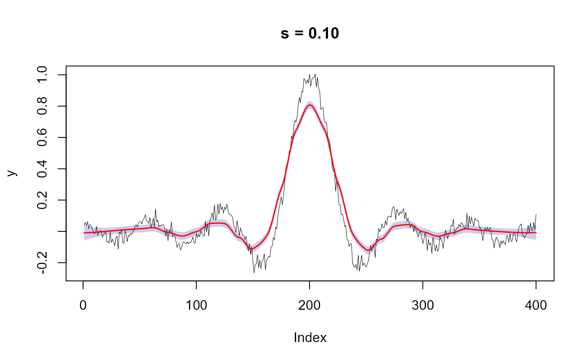

Calculates a Local Polynomial Regression for smoothing or imputation of missing data.
This is a wrapper function for loess that simplifies data smoothing and imputation of missing values. The function allows for smoothing a vector, based on an index (derived automatically) or covariates. If the impute option is TRUE NA values are imputed, otherwise the returned vector will still have NA's present. If impute and na.only are both TRUE the vector is returned, without being smoothed but with imputed NA values filled in. The loess weight function is defined using the tri-cube weight function w(x) = (1-|x|^3)^3 where; x is the distance of a data point from the point the curve being fitted.
poly.regression( y, x = NULL, s = 0.75, impute = FALSE, na.only = FALSE, ci = FALSE, ... )
| y | Vector to smooth or impute NA values |
|---|---|
| x | Optional x covariate data (must match dimensions of y) |
| s | Smoothing parameter (larger equates to more smoothing) |
| impute | (FALSE/TRUE) Should NA values be inputed |
| na.only | (FALSE/TRUE) Should only NA values be change in y |
| ci | (FALSE/TRUE) Should confidence intervals be returned |
| ... | Additional arguments passed to loess |
If ci = FALSE, a vector of smoothed values, otherwise a list object with:
loess - A vector, same length of y, representing the smoothed or inputed data
lower.ci - Lower confidence interval
upper.ci - Upper confidence interval
loess for loess ... model options
Jeffrey S. Evans jeffrey_evans@tnc.org
x <- seq(-20, 20, 0.1) y <- sin(x)/x + rnorm(length(x), sd=0.03) p <- which(y == "NaN") y <- y[-p] r <- poly.regression(y, ci=TRUE, s=0.30) plot(y,type="l", lwd=0.5, main="s = 0.10")y.polygon <- c((r$lower.ci)[1:length(y)], (r$upper.ci)[rev(1:length(y))]) x.polygon <- c(1:length(y), rev(1:length(y))) polygon(x.polygon, y.polygon, col="#00009933", border=NA)# Impute NA values, replacing only NA's y.na <- y y.na[c(100,200,300)] <- NA p.y <- poly.regression(y.na, s=0.10, impute = TRUE, na.only = TRUE) y - p.y#> [1] 0.00000000 0.00000000 0.00000000 0.00000000 0.00000000 0.00000000 #> [7] 0.00000000 0.00000000 0.00000000 0.00000000 0.00000000 0.00000000 #> [13] 0.00000000 0.00000000 0.00000000 0.00000000 0.00000000 0.00000000 #> [19] 0.00000000 0.00000000 0.00000000 0.00000000 0.00000000 0.00000000 #> [25] 0.00000000 0.00000000 0.00000000 0.00000000 0.00000000 0.00000000 #> [31] 0.00000000 0.00000000 0.00000000 0.00000000 0.00000000 0.00000000 #> [37] 0.00000000 0.00000000 0.00000000 0.00000000 0.00000000 0.00000000 #> [43] 0.00000000 0.00000000 0.00000000 0.00000000 0.00000000 0.00000000 #> [49] 0.00000000 0.00000000 0.00000000 0.00000000 0.00000000 0.00000000 #> [55] 0.00000000 0.00000000 0.00000000 0.00000000 0.00000000 0.00000000 #> [61] 0.00000000 0.00000000 0.00000000 0.00000000 0.00000000 0.00000000 #> [67] 0.00000000 0.00000000 0.00000000 0.00000000 0.00000000 0.00000000 #> [73] 0.00000000 0.00000000 0.00000000 0.00000000 0.00000000 0.00000000 #> [79] 0.00000000 0.00000000 0.00000000 0.00000000 0.00000000 0.00000000 #> [85] 0.00000000 0.00000000 0.00000000 0.00000000 0.00000000 0.00000000 #> [91] 0.00000000 0.00000000 0.00000000 0.00000000 0.00000000 0.00000000 #> [97] 0.00000000 0.00000000 0.00000000 -0.05126033 0.00000000 0.00000000 #> [103] 0.00000000 0.00000000 0.00000000 0.00000000 0.00000000 0.00000000 #> [109] 0.00000000 0.00000000 0.00000000 0.00000000 0.00000000 0.00000000 #> [115] 0.00000000 0.00000000 0.00000000 0.00000000 0.00000000 0.00000000 #> [121] 0.00000000 0.00000000 0.00000000 0.00000000 0.00000000 0.00000000 #> [127] 0.00000000 0.00000000 0.00000000 0.00000000 0.00000000 0.00000000 #> [133] 0.00000000 0.00000000 0.00000000 0.00000000 0.00000000 0.00000000 #> [139] 0.00000000 0.00000000 0.00000000 0.00000000 0.00000000 0.00000000 #> [145] 0.00000000 0.00000000 0.00000000 0.00000000 0.00000000 0.00000000 #> [151] 0.00000000 0.00000000 0.00000000 0.00000000 0.00000000 0.00000000 #> [157] 0.00000000 0.00000000 0.00000000 0.00000000 0.00000000 0.00000000 #> [163] 0.00000000 0.00000000 0.00000000 0.00000000 0.00000000 0.00000000 #> [169] 0.00000000 0.00000000 0.00000000 0.00000000 0.00000000 0.00000000 #> [175] 0.00000000 0.00000000 0.00000000 0.00000000 0.00000000 0.00000000 #> [181] 0.00000000 0.00000000 0.00000000 0.00000000 0.00000000 0.00000000 #> [187] 0.00000000 0.00000000 0.00000000 0.00000000 0.00000000 0.00000000 #> [193] 0.00000000 0.00000000 0.00000000 0.00000000 0.00000000 0.00000000 #> [199] 0.00000000 0.03166122 0.00000000 0.00000000 0.00000000 0.00000000 #> [205] 0.00000000 0.00000000 0.00000000 0.00000000 0.00000000 0.00000000 #> [211] 0.00000000 0.00000000 0.00000000 0.00000000 0.00000000 0.00000000 #> [217] 0.00000000 0.00000000 0.00000000 0.00000000 0.00000000 0.00000000 #> [223] 0.00000000 0.00000000 0.00000000 0.00000000 0.00000000 0.00000000 #> [229] 0.00000000 0.00000000 0.00000000 0.00000000 0.00000000 0.00000000 #> [235] 0.00000000 0.00000000 0.00000000 0.00000000 0.00000000 0.00000000 #> [241] 0.00000000 0.00000000 0.00000000 0.00000000 0.00000000 0.00000000 #> [247] 0.00000000 0.00000000 0.00000000 0.00000000 0.00000000 0.00000000 #> [253] 0.00000000 0.00000000 0.00000000 0.00000000 0.00000000 0.00000000 #> [259] 0.00000000 0.00000000 0.00000000 0.00000000 0.00000000 0.00000000 #> [265] 0.00000000 0.00000000 0.00000000 0.00000000 0.00000000 0.00000000 #> [271] 0.00000000 0.00000000 0.00000000 0.00000000 0.00000000 0.00000000 #> [277] 0.00000000 0.00000000 0.00000000 0.00000000 0.00000000 0.00000000 #> [283] 0.00000000 0.00000000 0.00000000 0.00000000 0.00000000 0.00000000 #> [289] 0.00000000 0.00000000 0.00000000 0.00000000 0.00000000 0.00000000 #> [295] 0.00000000 0.00000000 0.00000000 0.00000000 0.00000000 0.02946477 #> [301] 0.00000000 0.00000000 0.00000000 0.00000000 0.00000000 0.00000000 #> [307] 0.00000000 0.00000000 0.00000000 0.00000000 0.00000000 0.00000000 #> [313] 0.00000000 0.00000000 0.00000000 0.00000000 0.00000000 0.00000000 #> [319] 0.00000000 0.00000000 0.00000000 0.00000000 0.00000000 0.00000000 #> [325] 0.00000000 0.00000000 0.00000000 0.00000000 0.00000000 0.00000000 #> [331] 0.00000000 0.00000000 0.00000000 0.00000000 0.00000000 0.00000000 #> [337] 0.00000000 0.00000000 0.00000000 0.00000000 0.00000000 0.00000000 #> [343] 0.00000000 0.00000000 0.00000000 0.00000000 0.00000000 0.00000000 #> [349] 0.00000000 0.00000000 0.00000000 0.00000000 0.00000000 0.00000000 #> [355] 0.00000000 0.00000000 0.00000000 0.00000000 0.00000000 0.00000000 #> [361] 0.00000000 0.00000000 0.00000000 0.00000000 0.00000000 0.00000000 #> [367] 0.00000000 0.00000000 0.00000000 0.00000000 0.00000000 0.00000000 #> [373] 0.00000000 0.00000000 0.00000000 0.00000000 0.00000000 0.00000000 #> [379] 0.00000000 0.00000000 0.00000000 0.00000000 0.00000000 0.00000000 #> [385] 0.00000000 0.00000000 0.00000000 0.00000000 0.00000000 0.00000000 #> [391] 0.00000000 0.00000000 0.00000000 0.00000000 0.00000000 0.00000000 #> [397] 0.00000000 0.00000000 0.00000000 0.00000000